A search for places on Earth that resemble future Moon bases and Mars landing sites, built on open NASA data. This report explains what the app shows, how it works, how we check the result and why the answers come out the way they do.
Author: A. Shyrokov (ARKONEN)
Version: October 2026, with a November 2026 update (section 11)
Challenge: Identify Earth Locations that Analog the Permanent Moon Base Locations and Mars
Code: github.com/ARKONEN1/NASA
Contents
1In brief
2Why this is needed
3What is where on the screen
4How to use it, step by step
5How it works: the method
6How we check that the method works
7How we read the results and why they come out this way
8Limits
9How to reproduce the results
10Data sources
11What has been added since October
The screenshots were taken in the Ukrainian version of the interface. The app itself switches between English and Ukrainian in the header.
1. In brief
Before a rover, a drill or a crew goes to the Moon or Mars, NASA rehearses hardware and methods on Earth, at so-called terrestrial analogs: the Atacama Desert, Devon Island, Death Valley. Few such places are known, and most were chosen from expert experience. The hackathon challenge is to find and describe new analogs from open data.
We built a web app, Analog Atlas. The user picks a place on the Moon or Mars (for example, the Artemis base area near the lunar south pole) and what they want to rehearse there. The app compares every piece of Earth's land with that place (about 71 thousand cells of ~55 km) on 20 measured conditions. The result is a similarity map, the ten best places with an explanation of what is alike and what is not, a factor-by-factor comparison, close-up terrain from ESA Copernicus data, logistics, and a printable dossier for each candidate.
71,070cells of Earth's land, each described by 20 factors from open data
15target sites: 6 on the Moon and 9 on Mars
64–98%median rank of known NASA/ESA test sites that the model never saw (a random place: 50%)
93%of places in the 90 top-10 lists stay in the best 1% of land when the weights change at random by ±50%
1,525candidates with close-up terrain from the ESA Copernicus DEM at a 0.48 km baseline
5findings in the built-in tour, among them the new candidates Harrat Khaybar and Peary Land
The main check is honest and blind: the 19 sites that NASA and ESA already use were not shown to the model. If the method makes sense, they should rise to the top by themselves. They do: for Jezero crater on Mars, for example, the model puts the Atacama Desert first without being told. Where the known sites do not confirm the method, we show that and explain it (section 6).
2. Why this is needed
What a terrestrial analog is
A terrestrial analog is a place on Earth where conditions resemble, in some respect, those of another body. Equipment, rover routes, drilling, habitat modules and crew work can be tested there before it costs billions of dollars in space. Examples: Apollo astronauts learned geology at Meteor Crater in Arizona and on Iceland's volcanoes; Mars rovers are tested in the Atacama; the Haughton-Mars Project works in the Arctic crater Haughton.
What the challenge asks for
The challenge text has two key verbs: identify and characterize. Landing and base sites are chosen by terrain, geology, environment and resources. So an analog should be sought not by how the relief looks but by the whole set of conditions: cold, temperature swings, dryness, thin air, ultraviolet, bare ground without plants, ice, volcanic rock, impact craters, caves. The word new matters too: the Atacama and Death Valley are already known, and the value lies in places not yet in use. One more requirement is data from NASA and other space agencies. Besides NASA data we use the Copernicus DEM elevation model of the European Space Agency (ESA).
Why you cannot simply find a second Moon
No place on Earth is literally like the Moon or Mars. Earth has no nights at −180 °C, no 0.7 kPa air and nowhere without any precipitation at all. Gravity, vacuum and cosmic radiation cannot be reproduced on Earth in any way. Every analog is therefore partial: a place can be excellent for testing a rover (similar terrain and ground) and poor for testing a habitat (mild climate). That is why the app asks for a purpose: what exactly is being rehearsed.
What the app gives a mission team:
a map of all of Earth's land coloured by similarity to the chosen site;
a list of the best candidates tagged "new" or "known";
a description of each candidate: land cover, elevation, climate, the nearest volcano, crater and lava tube;
a factor-by-factor comparison: what matches, what does not, and where the target lies beyond Earth's range altogether;
a robustness check of each candidate against the choice of weights;
close-up terrain at the same 0.48 km baseline on Earth, the Moon and Mars;
logistics: the nearest town and airport;
a site dossier, one printable page per candidate;
export of the 50 best places as CSV or GeoJSON for further work in a GIS.
3. What is where on the screen
Fig. 1. The main screen (Ukrainian version). Target: the rim of Shackleton crater near the lunar south pole; purpose: "All conditions".
Area
What is there
Header
The title, the Discoveries button (a tour of the main results), the "How it works" button (method and hints), a link to this report, and the EN / УКР language switch.
Left panel, step 1
Destination: Moon or Mars.
Left panel, step 2
Site: a relief map of the Moon or Mars with numbered targets, and a list of those targets with thumbnails.
Left panel, step 3
What will you test: the purposes; below them the factor weights can be tuned by hand.
"How to read this map"
Three sentences on how to use the app, inside "How it works".
Map of Earth
Similarity of every land cell to the chosen target; numbered best places; white circles for known analogs; triangles for lava tubes and diamonds for life-at-the-limits sites (both switched on separately).
"Best Earth analogs"
The ten best places, at least 400 km apart, with a score, a "new / known" tag and a short explanation. Below the list: CSV / GeoJSON export.
"Side by side"
The target and the chosen place on Earth together: description, logistics, relief, satellite image, score with robustness, the "Dossier (PDF)" button, the factor fingerprint, close-up terrain and the table of all factors.
"Does the method work?"
Where the known NASA/ESA sites rank for the current choice, and which factors they confirm.
"How it works"
A short account of the method and its limits, and the list of data sources.
Fig. 2. The hint for a first visit: three steps instead of a manual.
4. How to use it, step by step
4.1. Language
The EN / УКР switch in the top right corner changes the whole interface, the names of places on the Moon and Mars, and the names of known sites and countries. The choice is remembered in the browser.
Fig. 3. The header: the "Discoveries" and "How it works" buttons and the language switch.
4.2. Steps 1–2: pick a site on the Moon or Mars
The maps are built from the same data as the calculation: the Moon from the LRO LOLA laser altimeter, Mars from MGS MOLA. A marker's number on the map matches its number in the list; a click on a marker or a list row selects the target, and the map of Earth is recomputed at once.
The three Artemis candidate areas lie within 170 km of the lunar south pole. On an ordinary map they would merge into a strip along the bottom edge, so they are shown separately on a polar map of 440 × 440 km (stereographic projection from the 240 m LOLA polar elevation model). On the global map the polar strip is marked with a dashed line.
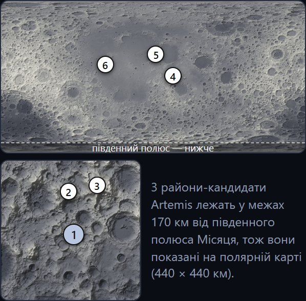
Fig. 4. The Moon: the global map (sites 4–6) and the polar inset with the Artemis areas (1–3).
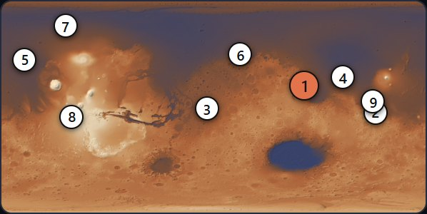
Fig. 5. Mars: nine targets, from Jezero and Gale craters to the icy plains and the caves of Arsia Mons.
4.3. Step 3: what will you test
The purpose decides which factors matter more. Rovers have to be tested on similar terrain, a habitat module in similar cold and dry, thin air. A short line under the buttons says what each purpose looks at. Under "Fine-tune factor weights" every factor can be strengthened or switched off by hand (from 0 to 3). Factors that make no sense for a target are marked "n/a" (wind on the Moon, for example, which has no atmosphere).
Fig. 6. The purposes (six in the October version).
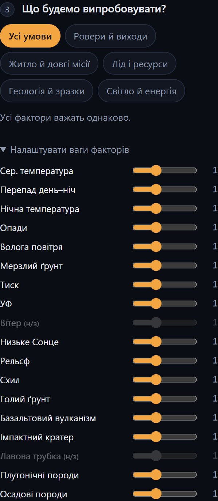
Fig. 7. Tuning the weights by hand.
4.4. The map of Earth
Colour shows how alike a cell is to the target. Only the best 40% of land is coloured, from dark violet to pale yellow (most alike). The numbered orange circles are the ten best places. The white circles are known NASA/ESA sites, so it is clear at once where they stand relative to what was found. The switches at the bottom right add the lava-tube and cave layer. The map can be zoomed, and a click on any cell opens its comparison with the target.
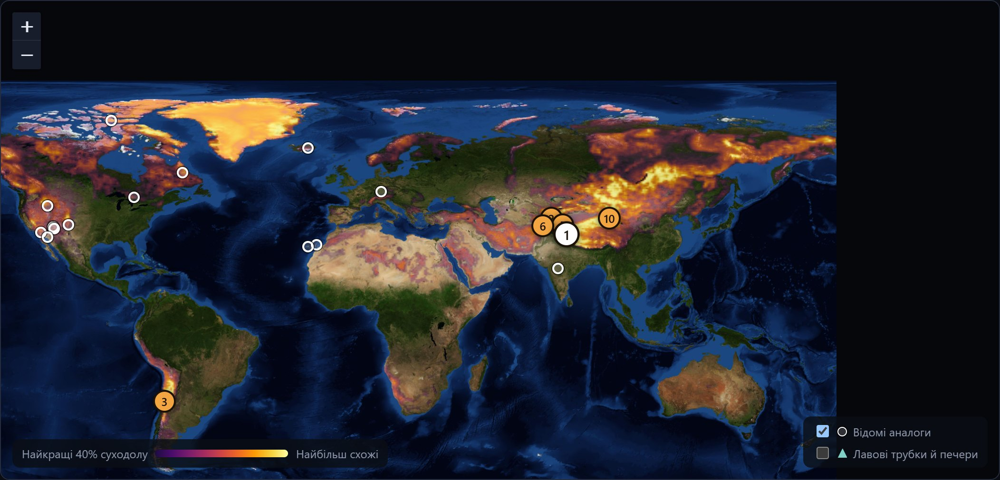
Fig. 8. Similarity of Earth's land to the rim of Shackleton crater ("All conditions"). The brightest areas are the highlands of Central Asia, the Andean puna and the polar deserts.
4.5. The list of best analogs
Fig. 9. The ten best places for the Shackleton rim.
Each row gives the country, the coordinates, a score out of 100 and the share of land the place beats ("top 0.1%" means that less than 0.1% of Earth's land area is more alike). The tag new means there is no known site within 150 km; known means there is one. The line "Alike in …" names the factors on which the place most outperforms an ordinary land cell, and "differs in …" names the worst match.
4.6. The "Side by side" comparison
On the left is the target: the kind of site, its coordinates, shaded relief of 150 × 150 km and why the site matters. On the right is the place on Earth: country, coordinates, a one-line description (land cover, elevation, mean, night and day temperature, yearly precipitation), the nearest volcano, impact crater and lava tube with names and distances, shaded relief at the same scale (ASTER GDEM) and a satellite image (Blue Marble).
Below is the table of all factors: the value on Earth, the value at the target and a match bar. The note "lower / higher than anywhere on Earth" means the target condition lies beyond Earth's range. The best possible match is then the most extreme place Earth has (see 5.3). Grey rows are factors not counted for the chosen purpose.
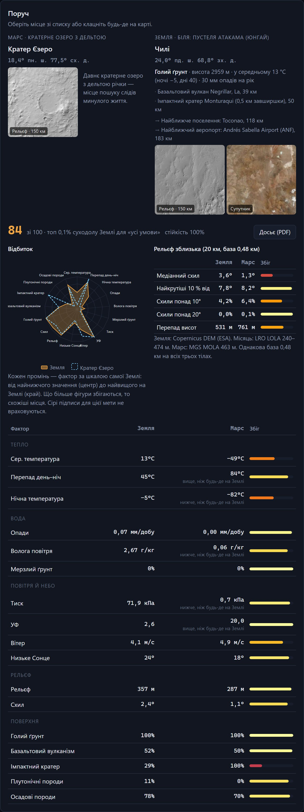
Fig. 10. Jezero crater (Mars) next to its best Earth analog, the Atacama Desert in Chile.
4.7. Exporting the results
The CSV and GeoJSON buttons under the list save the 50 best places (at least 250 km apart) for the current choice. For each place the file holds the rank, coordinates, country, score, share of land, "new / known" status, land cover and elevation, as well as the value of every factor and its match with the target. GeoJSON opens in QGIS, ArcGIS or Google Earth. The file also carries robustness, the nearest town and airport and the close-up terrain figures.
4.8. Fingerprint and terrain up close
The fingerprint is a radar chart of all factors. Each spoke is a factor on Earth's own scale: the lowest value on Earth at the centre, the highest at the edge. The dashed outline is the Moon or Mars target, the filled shape is the place on Earth. The more the shapes coincide, the more alike the places are; grey labels are not counted for the chosen purpose. The fingerprint shows the similarity in a second, without reading the table.
Terrain up close compares places at the scale of a landing ellipse: a 20 × 20 km window sampled every 0.48 km. It shows the median slope, the threshold of the steepest 10% of slopes, the share of slopes over 10° and 20°, and the height range. For Earth the data are the ESA Copernicus DEM, for the Moon LRO LOLA (240–474 m), for Mars MGS MOLA (463 m).
Fig. 11. Fingerprint and terrain up close: the caves of Arsia Mons (Mars) and Harrat Khaybar (Saudi Arabia).
4.9. Robustness and logistics
Under the score of each place stands its robustness: in how many of 60 re-scorings with randomly changed weights the place stays in the best 1% of land (see 6.5). Green means 80% or more, orange less. The place card also has logistics: the nearest town and airport with distances (Natural Earth). For a field expedition that is the first practical question.
4.10. The site dossier
The "Dossier (PDF)" button in the "Side by side" block opens a one-page printout per candidate: score, robustness, status, description and logistics, three images (the target, relief and a satellite image of Earth), the fingerprint, fitness for every purpose, terrain up close and the table of all factors. In the print dialog choose "Save as PDF". Such a dossier can be handed straight to an expedition team.
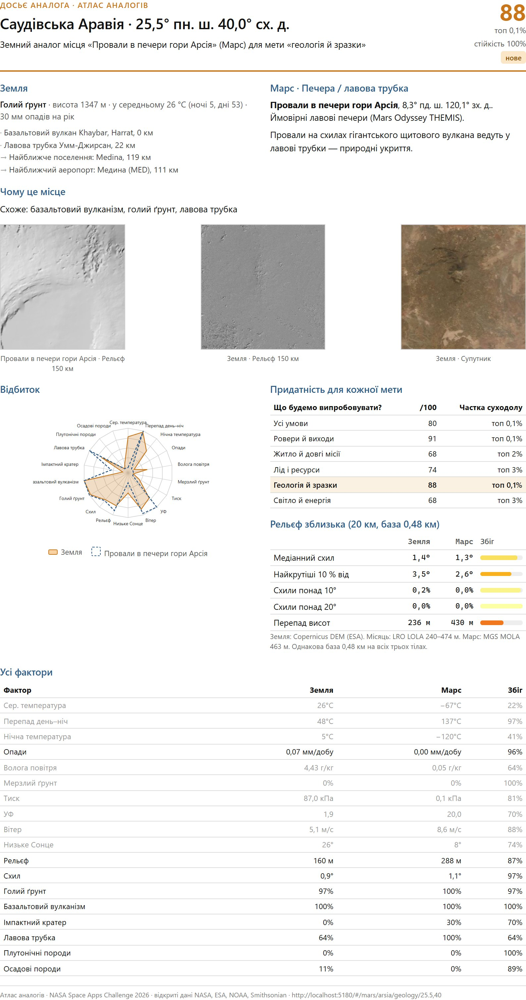
Fig. 12. The dossier of Harrat Khaybar as an Earth analog of the Arsia Mons caves.
4.11. Discoveries and links
The Discoveries button starts a five-step tour of the main results (section 7). Each step switches the target and purpose by itself, opens the right place on the map and explains what we found. This mode is handy for showing the project to a jury.
The page address always holds the current choice, for example #/mars/arsia/geology/25.5,40. Such a link can be shared: it opens the same choice and the same place.
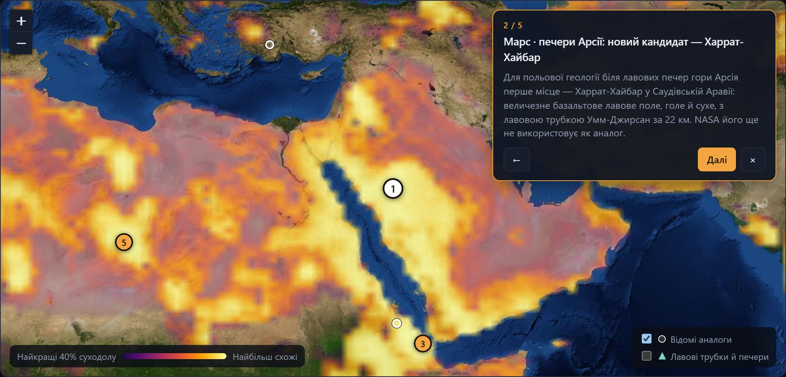
Fig. 13. The "Discoveries" tour, step 2: the new candidate Harrat Khaybar.
5. How it works: the method
5.1. Data
All the data are open. For Earth we took the global NASA POWER grid (0.5° × 0.625°, about 55 km) and kept only cells where at least a quarter of the area is land. That left 71,070 cells. Twenty factors are measured for each. The table lists the first sixteen; section 11 adds the other four (dust, plutonic rock, sedimentary rock, salts):
Factor
Earth (every cell)
Moon / Mars (every target)
Relief, slope
NOAA ETOPO1, 3.7 km spacing
LRO LOLA (240 m near the pole), MGS MOLA 128 px/° (~460 m)
Terrain up close (for information)
ESA Copernicus DEM (240 m level), 0.48 km baseline
LRO Diviner; Mars Climate Database v6.2 (computed for each site since November, see section 11)
Precipitation, air moisture, pressure, UV, wind
NASA POWER (UV from CERES)
Values from the literature: no precipitation, almost no water vapour, pressure 0–0.9 kPa
Bare ground, ice
MODIS IGBP Land Cover 2024 via NASA GIBS
The surface is always bare
Frozen ground
Share of months below 0 °C, or share of ice
0–1 from known ground ice
Basaltic volcanism
Distance to Holocene basaltic volcanoes (Smithsonian GVP)
0–1 from the site geology
Impact crater
Distance to exposed confirmed craters (Earth Impact Database)
0–1 from the site geology
Low sun
Latitude
Latitude
Lava tube
Distance to 22 well-documented lava tubes
Cave targets only
5.2. The same terrain measures on three worlds
Terrain can be compared fairly only when it is measured the same way. So for every place on every body we take elevations on the same grid of 15 × 15 points, 3.7 km apart, that is a 52 × 52 km square in a local projection around the centre. From these elevations we compute two quantities: relief (the standard deviation of elevation, m) and typical slope (the median gradient at a 3.7 km baseline, degrees). A stability check: when we moved Mars from the coarse MOLA model at 16 px/° to the detailed one at 128 px/°, the values barely changed (Gale crater: 1245 m → 1283 m). The measure does not depend on incidental details of the data.
5.3. Earth's own scale
This is the central idea of the method. Comparing absolute values is pointless: against the 0.7 kPa of Mars, every place on Earth (50–105 kPa) is equally bad. So we turn every factor into a percentile among Earth's land, weighted by cell area: 0 is the lowest value on Earth, 1 the highest. The target value is put on the same scale. If it lies beyond Earth's range it becomes 0 or 1, pointing to the most extreme end Earth has.
Example. Pressure in Jezero crater is 0.7 kPa, lower than anywhere on Earth, so the target gets percentile 0. The Earth places closest to it are those with the lowest pressure among land, the highest plateaus. In the Atacama Desert at 2959 m the pressure is 71.9 kPa: not Martian pressure, but already within the lowest few percent of Earth's distribution. The pressure match there is therefore high.
5.4. The score
For each factor f the similarity of an Earth cell to the target is one minus the difference of percentiles. For degree factors (bare ground, frozen ground, volcanism, crater, lava tube), which already lie on a 0–1 scale, the difference is taken directly:
sf = 1 − | PEarth(f) − Ptarget(f) |
The final score is the weighted mean over all factors with the weights wf of the chosen purpose, multiplied by 100:
S = 100 · Σ wf · sf / Σ wf
Separately we compute what share of Earth's land area the place beats on this score (that is the "top 0.1%"). The best places are picked greedily, at least 400 km apart, so that one plateau does not fill the whole top ten.
Wheels and boots care about the surface and the gradients
Habitats & long stays
Mean and night temperature, day–night swing, pressure 2 each; UV and lava tube 1.5; moisture, precipitation, bare ground, wind 1
A habitat cares about the thermal regime and the air; a tube is natural shelter
Ice & resource mining
Frozen ground 3, bare ground 3; mean and night temperature 2; moisture, precipitation, relief 1
Ice under bare regolith in a cold, dry place
Geology & sampling
Volcanism 3, crater 3; bare ground and lava tube 2; relief, slope, precipitation 1
Field geology: rocks and impact structures
Light & power
Low sun 3, relief 1.5; mean and night temperature, bare ground 1
Long shadows and a low sun, as at the lunar poles
5.6. How the "Alike" and "differs" lines are made
If we simply named the factors with the highest match, the explanations would be empty. "No volcano nearby", for instance, is true for most of Earth. So for each factor we compute the mean match of an ordinary land cell and name the factors where the place exceeds that mean the most (taking the weight into account). "Alike in impact crater, bare ground, day–night swing" then says exactly what makes the place special. "Differs" is the factor with the worst match, if it is below 60%.
5.7. Terrain up close: how it is computed
The global grid is coarse (~55 km), while landing and rover routes depend on slopes at a scale of hundreds of metres. So for each candidate we compute a separate set of figures in a 20 × 20 km window sampled every 0.48 km. That is the finest scale available on all three bodies: the ESA Copernicus DEM on Earth (240 m level), LOLA 240 m near the lunar pole and LDEM_64 (474 m) at other latitudes, MOLA 463 m on Mars.
The Copernicus DEM cannot be read straight from a browser, so the figures are precomputed for 1,525 candidates: every place that appears in any top-50 list for any target and purpose, plus the known sites. These figures are not part of the score: they help choose a specific patch inside the region that was found.
6. How we check that the method works
6.1. A blind check on known sites
We compiled a list of 19 places that NASA and ESA already use as analogs: the Atacama Desert, the McMurdo Dry Valleys, Haughton crater on Devon Island, the Mars Desert Research Station in Utah, Death Valley, Río Tinto, the Qaidam Basin, the Pilbara, Dallol, Svalbard, Mauna Kea, the Black Point lava flow, Meteor Crater, Craters of the Moon in Idaho, Sudbury, the Ries crater, Lanzarote, the Icelandic highlands and Mistastin Lake. These places are not used in computing the score. They serve only to see where the model puts them.
For each site we take the best cell within 60 km and look at its rank among all land. A random place would rank at 50% on average. If the median of the known sites is clearly higher, the score does capture what people chose analogs for.
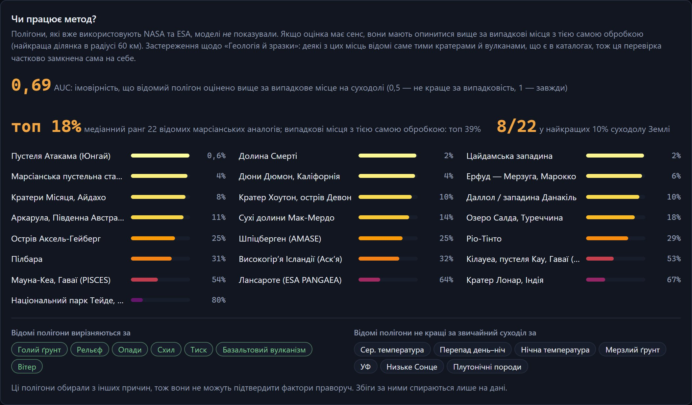
Fig. 14. The "Does the method work?" block for Jezero crater: the median rank of the 14 Mars sites is top 22% (the 78th percentile); 6 of 14 fall in the best 10% of land.
6.2. Results for all targets
Median rank of the known sites (percentile of land; 50% = a random place), averaged over all targets of the body:
Purpose
Moon (11 sites)
Mars (14 sites)
All conditions
79.9%
80.8%
Rovers & spacewalks
89.8%
89.2%
Habitats & long stays
64.3%
78.4%
Ice & resource mining
77.9%
86.1%
Geology & sampling
98.2%*
90.0%*
Light & power
76.0%
77.7%
* The check for "Geology" is partly circular: some sites (Meteor Crater, Sudbury, Ries, Haughton crater) are famous for the very craters and volcanoes listed in the catalogues the model uses. We do not treat these numbers as proof and give them only for completeness.
All values are above 50%, and in most scenarios they are 77–90%. The weakest case is "Habitats" for the Moon (64%). We worked out why.
6.3. Diagnosis: what the known sites actually confirm
Under the check results the app shows two lists: the factors on which the known sites stand out from ordinary land, and those on which they are no better than it. For "Habitats" on the Moon the picture is this: the sites stand out in bare ground, temperatures, dry air and pressure, but are no better than ordinary land on the most lunar traits of all: the huge day–night swing, the absence of precipitation and the strong UV. Besides, some of the sites lie in a mild climate: Lanzarote (top 84%), Mauna Kea (67%), the Ries crater (59%).
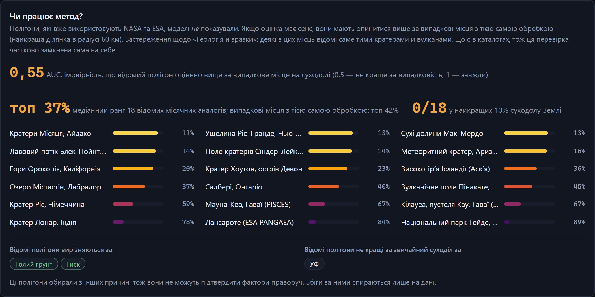
Fig. 15. Shackleton rim, "Habitats": the median rank is top 36%. The lists at the bottom show the reason.
Conclusion. The known lunar sites (Hawaii, Arizona, Ries, Sudbury, Iceland) were chosen for geology and terrain, not climate. They can therefore neither confirm nor refute the climate part of the method for the Moon: there is no reference for a lunar climate among them. For Mars targets the same purpose gives 78.4%, because the Mars sites (Atacama, the Dry Valleys, Devon) were chosen precisely for cold and dryness. This is not an error of the score but a limit of what can be checked. The app says so plainly under the lists.
6.4. A correction that the check produced
Analysing the check exposed one real mistake. For "Ice & resource mining" at Arcadia Planitia (Mars) the Antarctic ice sheet won at first, while the app itself wrote "differs in bare ground". But on Mars the ice lies under bare regolith, a metre or two down. Physically the closest analog is the permafrost of polar deserts, not a glacier. We raised the weight of bare ground in this purpose from 1 to 3 and checked the result:
Weight of "bare ground" in the "Ice" purpose
1 (before)
3 (after)
Haughton crater, Devon Island (known site)
top 7.0%
top <0.1%
McMurdo Dry Valleys (known site)
top 6.7%
top 5.6%
First place
Antarctic ice sheet
Peary Land, north Greenland
Median of known sites, Mars / Moon
78.6% / 73.7%
86.1% / 77.9%
This is the correction of a physical mistake, not a fit to the answer: we changed one weight, with a stated reason, and the improvement shows on independent sites.
6.5. Robustness: does the result depend on our weights
The factor weights are chosen by a person, so a jury will naturally ask: what if the weights were a little different? We answer numerically. For each candidate the app recomputes the whole map 60 times. Each time every weight is multiplied by a random number from 0.5 to 1.5, and the target's position on Earth's scale is shifted by ±0.05: that is the uncertainty of the rounded climate values for the Moon and Mars. Robustness is the share of re-scorings in which the place stays in the best 1% of land. The random generator is seeded, so the result is reproducible.
The results are driven by the data, not by the exact choice of weights. The lower robustness for "Light" and "Ice" is to be expected: polar deserts are very alike, and their order in the list changes easily. The regions themselves stay the same.
7. How we read the results and why they come out this way
We read each result in three steps. (1) Did the known sites rise to the top? (2) Which factors produce the similarity, and does that make physical sense? (3) What does not match at the best place? Five cases follow.
7.1. Jezero crater (Mars), "All conditions" → Atacama Desert, Chile
Fig. 16. The best analogs of Jezero crater.
First place goes to the Atacama (24.0° S, 68.8° W, score 85, tagged "known"). The model did not know that the Atacama is the classic Mars test site and found it by itself. Why:
bare ground 100%, as on Mars;
precipitation 0.07 mm/day (~30 mm a year), among the driest places on Earth;
elevation ~3000 m: pressure 71.9 kPa, strong UV, a day–night swing of 45 °C;
relief of 357 m against 287 m at Jezero, with basaltic volcanism nearby, as on the crater floor.
What does not match: the impact crater (the nearest is tiny Monturaqui, 50 km away) and, of course, the absolute cold.
Next come the Pamir, the Altiplano, the Ahaggar in Algeria (a basalt plateau in the Sahara) and Tibesti in Chad. These are new candidates.
7.2. Arsia Mons caves (Mars), "Geology & sampling" → Harrat Khaybar, Saudi Arabia
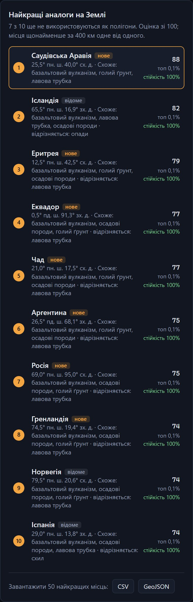
Fig. 17. The best analogs of the Arsia caves for geology.
First place by a wide margin (86 against 73 for the second) goes to Harrat Khaybar (25.5° N, 40.0° E), tagged new. Why:
a vast basaltic lava field: the cell sits right on the Khaybar volcano;
the Umm Jirsan lava tube 22 km away, the longest known lava tube of the Arabian Peninsula;
bare ground, 30 mm of precipitation a year, elevation 1347 m.
The target on Mars is a set of skylights into lava tubes on the flank of a shield volcano. Khaybar is the same type: basaltic lava and tubes, dry and without plants. NASA does not use it as an analog. This is the kind of result we value most: new, physically grounded and testable.
The logistics are convenient: Medina airport is 111 km away. Robustness is 100%. Next come Dallol (Ethiopia) and Iceland, both already known sites, which supports the logic of the selection.
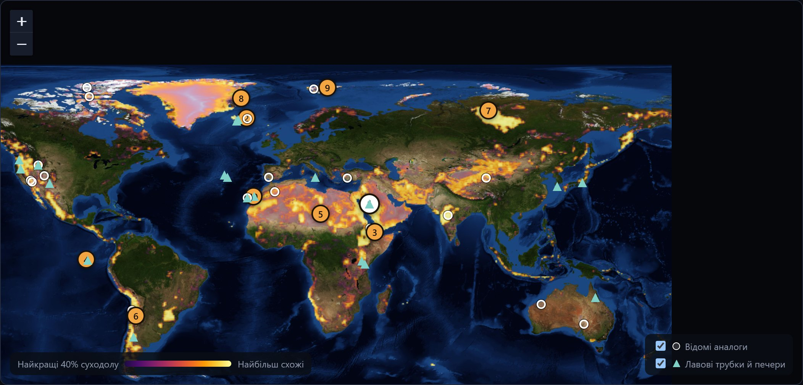
Fig. 18. The map for the Arsia caves with the lava-tube layer on (turquoise triangles). The bright bands are the volcanic belts of Arabia, East Africa, the Andes and Iceland.
7.3. Shackleton crater rim (Moon), "All conditions" → the Pamir, Tajikistan
First place is at 39.0° N, 73.8° E (score 85). This is the area of Kara-Kul crater in the Pamir: an impact structure 52 km wide at 4512 m. The model did not know about the crater directly; it saw a combination of factors:
an impact crater (the Shackleton rim is also the edge of an impact crater);
bare ground, frost (−5 °C on average, nights of −30 °C) and a large day–night swing;
the low pressure of high mountains.
Terrain up close confirms the match at the 0.48 km scale too: a median slope of 16.4° in the Pamir against 16.3° on the Shackleton rim, and slopes over 10° covering 76% against 66%. The place deserves attention as a ground for testing landing and movement on steep slopes.
What does not match: ultraviolet (on the Moon it has no atmospheric shield, in the Pamir it does) and, of course, the polar light. The rest of the top ten are the Tibetan highlands, the Karakoram and the Andean puna. That is to be expected: on Earth the most lunar conditions (thin air, dryness, frost and bare ground) come together in high-mountain deserts. For "Light & power" the weight goes to latitude, and the result moves to the polar regions: north Greenland, Ellesmere Island and Svalbard take the first places.
Fig. 19. The Shackleton rim next to the Pamir place.
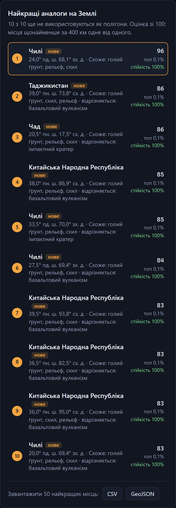
Fig. 20. Hadley Rille, "Rovers": the best match (96) is the Atacama puna by the Tilocalar volcano.
Rovers care about relief, slopes and bare ground. First place is at 24.0° S, 68.1° W (score 96), at 3436 m, 3 km from the basaltic Tilocalar volcano: lava flows, slopes and bare ground, as beside the Hadley lava channel at the foot of the lunar Apennines. In this scenario the known lunar sites have a median rank of top 7%, and 6 of 11 are in the best 10%.
7.5. Arcadia Planitia (Mars), "Ice & resource mining" → the polar deserts of the Arctic
After the correction of section 6.4 the first places go to Peary Land in north Greenland (82.0° N) and the islands of the Canadian Arctic Archipelago. Haughton crater on Devon Island, a known Mars site, is sixth. The similarity comes from bare ground, frozen ground and mean temperature. These are polar deserts: permafrost under stony ground without plants, much like Martian ice under regolith.
What does not match: the relief in places (Arcadia is one of the flattest surfaces on Mars), and there is more precipitation here than in the Dry Valleys.
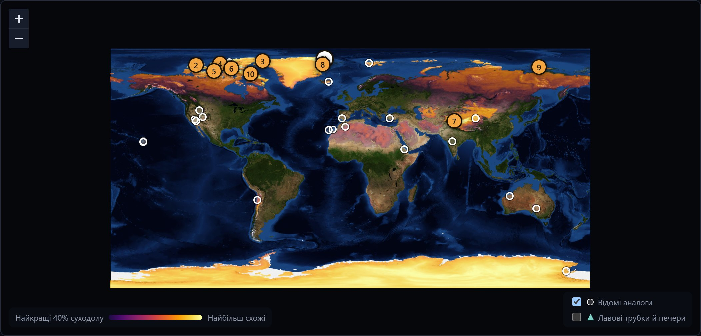
Fig. 21. Arcadia, "Ice": the brightest areas are the Arctic, Tibet and Antarctica. The numbered best places are mostly the polar deserts of Greenland and the Canadian archipelago; No. 6 is Haughton crater on Devon Island, a known site.
7.6. The overall pattern
Earth analogs of the Moon and Mars gather in a few kinds of places, each answering to a certain group of conditions:
high-mountain deserts (the Altiplano and Andean puna, Tibet, the Pamir): thin air, frost, dryness, a large day–night swing;
hot deserts with basalt (the Sahara: Ahaggar, Tibesti; Arabia: the harrats): bare ground, volcanic rock, lava tubes;
polar deserts (the Arctic, the Dry Valleys): frozen ground under a bare surface, a low sun.
That the three classic kinds of Earth analog (the Atacama, the Dry Valleys, volcanic fields) appear by themselves, without hints, is one more sign that the method captures physics and not chance.
8. Limits
An analog is always partial. Gravity, vacuum and cosmic radiation cannot be reproduced on Earth. The app therefore answers "alike for what exactly", not "where is a second Mars".
Resolution of ~55 km. Single caves, crater rims or hills smaller than a cell are not seen. The app finds regions; the exact spot for a test site has to be chosen with finer data.
Moon and Mars climate values are rounded figures from the literature (Diviner, REMS, MEDA, Phoenix, InSight, the Mars Climate Database), not our own measurements. (Updated since: see section 11.)
Lava tubes are a hand-compiled list (22 well-documented systems). There is no global catalogue, so the list is incomplete and the coordinates approximate.
The "Geology" check is partly circular (section 6.2), and the climate part for the Moon has nothing to be checked against (section 6.3).
Terrain up close is precomputed for 1,525 candidates only; if the user changes the weights a lot, a new place may lack these data. The 0.48 km scale is that of a landing ellipse, not of a single boulder: boulders need HiRISE / LROC images, available only for selected areas.
The choice of weights is a human decision. We make it transparent: the weights are visible and can be changed, and their effect is checked on the known sites.
9. How to reproduce the results
Code and prepared data: github.com/ARKONEN1/NASA. Node.js 18+ is required.
npm install
npm run serve # the app at http://localhost:5180
npm run data # download the source data (~20 min; NASA POWER limits the request rate)
npm run build:data # Earth grid, targets, maps, logistics, terrain up close (Copernicus)
npm run validate # the blind check on known sites (the table of section 6.2)
node tools/robustness.mjs # robustness of all the lists (the table of section 6.5)
The app is a static site with no server. It can be deployed to Cloudflare Workers (the wrangler.jsonc configuration) or to any static hosting. The score is computed in the browser, so a change of weights recomputes the whole map at once.
Papers on life at the limits (DOI link with each site in the app)
The "Life at the limits" layer (since November)
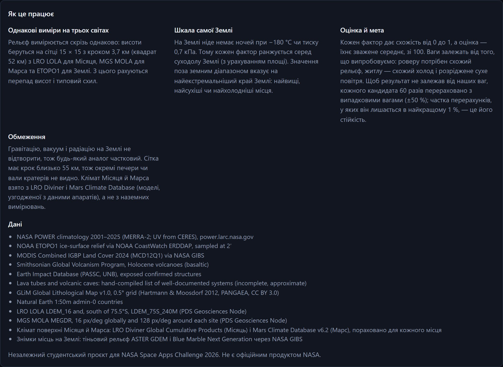
Fig. 22. The "How it works" section in the app itself: a short account of the method, the limits and the sources.
11. What has been added since October
Sections 1–10 describe the October version, and their numbers refer to it. Since then the app has been extended:
There are now 20 factors. Added: dust in the air (optical depth of coarse aerosol, MERRA-2 via NASA POWER) and three rock types from the GLiM lithological map: plutonic rock (like the lunar highlands), sedimentary rock and salt deposits.
There are now 8 purposes. Added: "Landing & construction" and "Search for life" (Mars only).
Moon and Mars climate is now computed from data for each target: LRO Diviner Global Cumulative Products and the Mars Climate Database v6.2, instead of rounded literature values.
The method check uses AUC, the chance that a known site ranks above a random place on land. On the original 19 sites the AUC ranges from 0.60 to 0.80; on the extended list of 31 sites it is 0.56–0.77. The weakest case is the same: Moon, "Habitats".
A "well-studied region" tag for places inside the regions the challenge names as well known (Atacama, Antarctica, Iceland, Hawaii, the Mojave and Death Valley, Devon Island), and an "Only little-studied places" filter.
A comparison with the best known test site and a "Processes it shares" block: dust storms, salt deposits, permafrost, basaltic volcanism, lava tubes, impact cratering, thermal weathering.
A verdict in the place card: where the analogy is strong, where it breaks down, what no place on Earth can give (gravity, pressure and radiation dose, in numbers) and what to rehearse here.
"Life at the limits": a map layer and a card block with 23 places where peer-reviewed studies document extremophiles or ancient traces of life (Yungay, Río Tinto, Dallol, University Valley, Kidd Creek Mine, Movile Cave and others), each with its reference. The list is hand-compiled, the coordinates are approximate, and it does not affect the similarity score.
Independent student project for the NASA Space Apps Challenge 2026. Not an official NASA product and not endorsed by NASA. Author: A. Shyrokov.